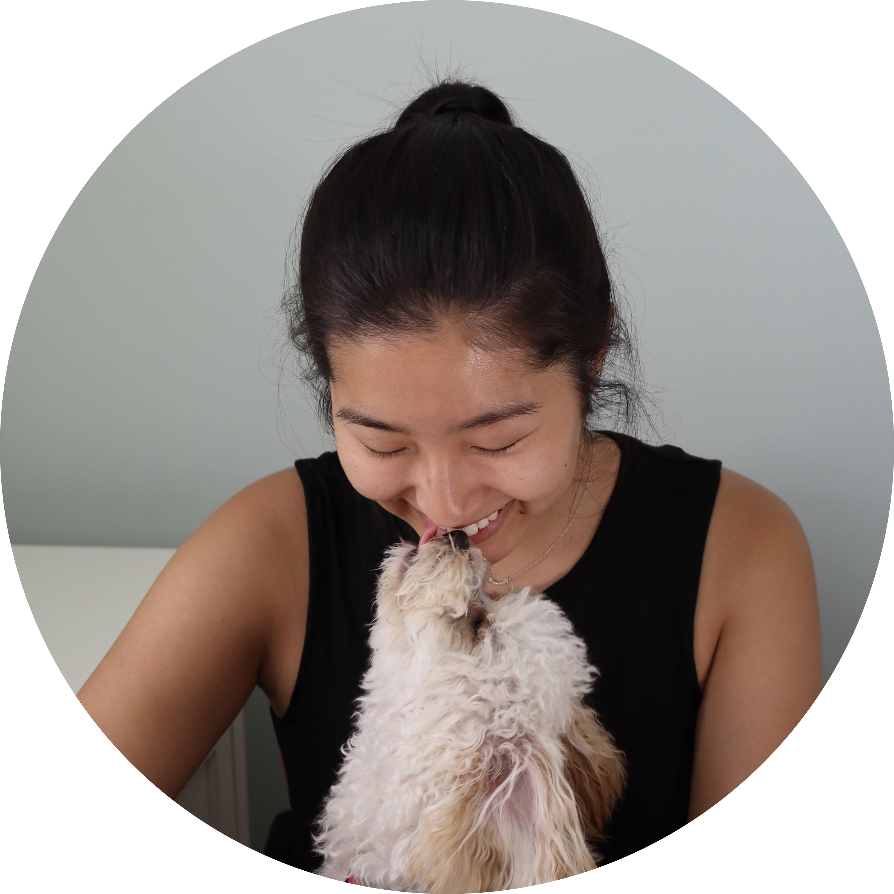

Just for Fun
 Thanks for clicking on my sprout! Welcome to my secret page of fun, hobbies, and stuff.That's my dog Bella. She's a sassy little Bichon Poodle who loves chicken and hates vacuums. She says arf!
Knitting and Crocheting
I’ve been knitting and crocheting since I was eight years old. Here are a few of my favorite recent projects from my favorite hobby.